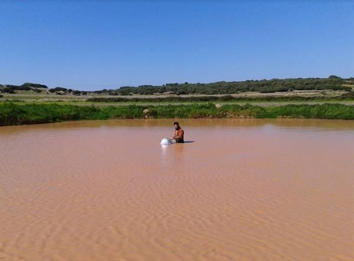
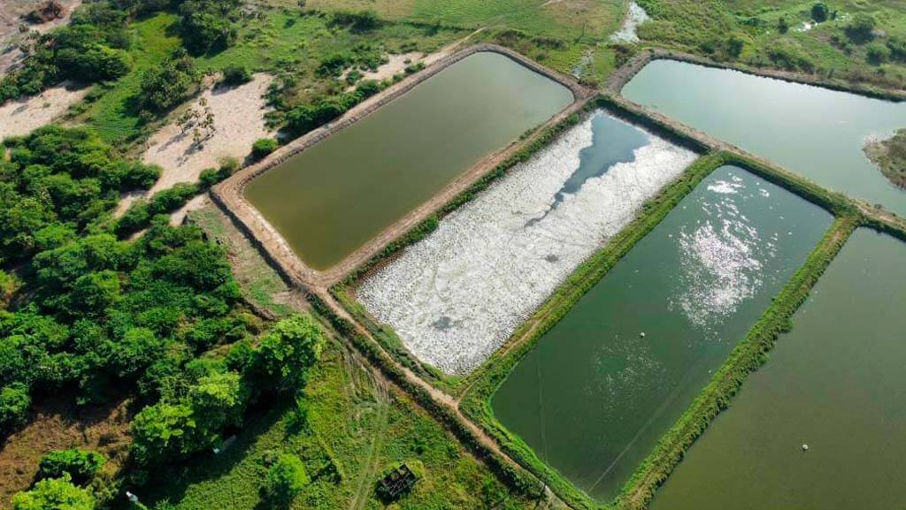
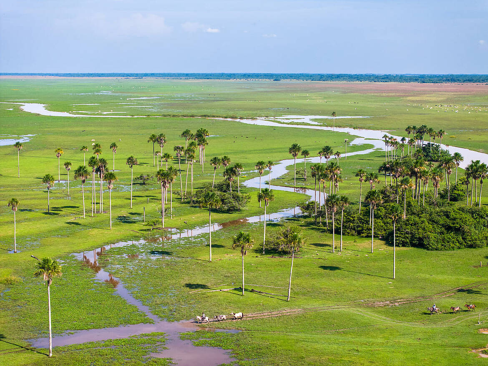
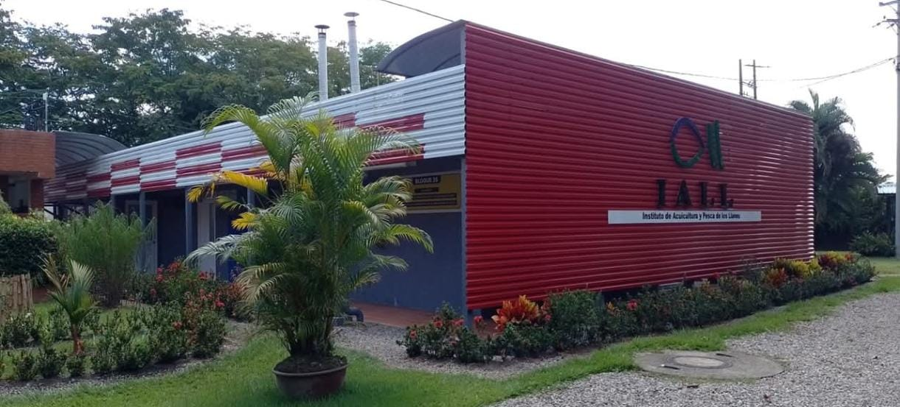
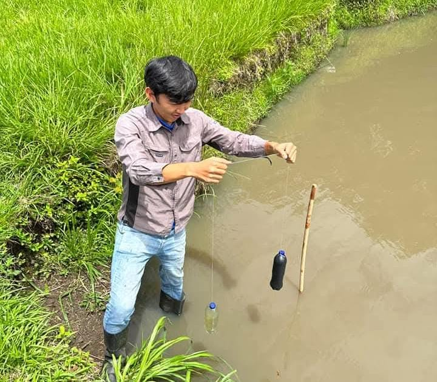
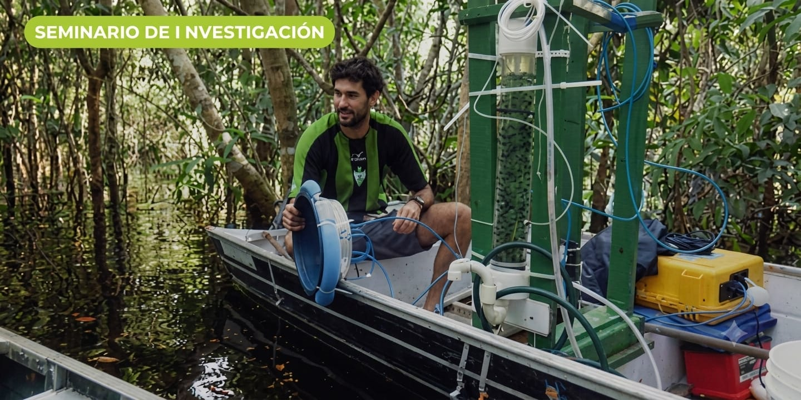
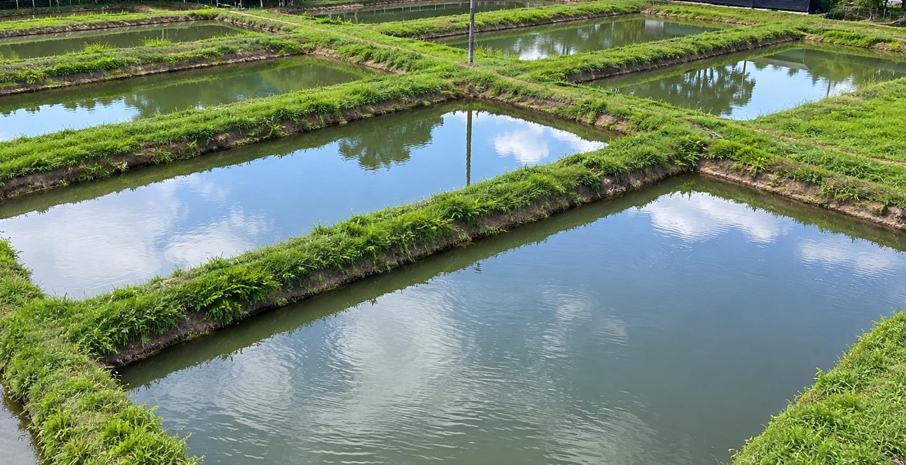
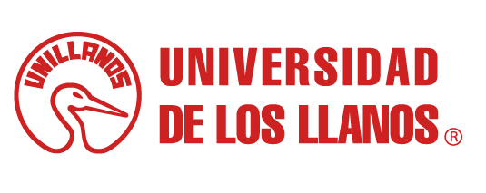

Los estanques de tierra también son fuente de gases de efecto invernadero
El alimento no consumido, la producción primaria y las heces se acumulan en el sedimento del estanque y allí se descomponen — liberando CO₂ y CH₄ al ambiente.
Con oxígeno, esa descomposición libera principalmente CO₂; sin oxígeno, domina la metanogénesis y se libera CH₄ — un gas con un potencial de calentamiento 27 veces mayor que el CO₂. A nivel global, los estanques de tierra son responsables de más del 80% de las emisiones de GEI del sector acuícola, pero prácticamente no existe información propia sobre estas emisiones en la Orinoquía, con la cachama como especie líder.
- Cuantificar emisiones de CO₂ y CH₄ durante el ciclo productivo de la cachama.
- Caracterizar las condiciones fisicoquímicas del agua (pH, temperatura, oxígeno disuelto).
- Entender su relación con la generación y liberación de gases de efecto invernadero.
- Aportar información propia de la Orinoquía, hoy prácticamente inexistente.
Los números del muestreo hablan por sí solos
Muestras analizadas hasta la fecha, desde el inicio del monitoreo.
Estanques de tierra monitoreados de forma continua.
Fases de muestreo en cada visita de campo.







Variables analizadas en cada muestra

- Valentina Wilches Ávila valentina.wilches@unillanos.edu.co
- Yudy Alejandra Solano López yudy.solano@unillanos.edu.co
- Diego David Pardo Buitrago
- João Henrique Fernandes Amaral
SEDE BARCELONA VILLAVICENCIO
Dirección: Km. 12 Vía Puerto López, Vereda Barcelona, Villavicencio (Meta) Celular: 300 000 00-01 - 300 000 00-02